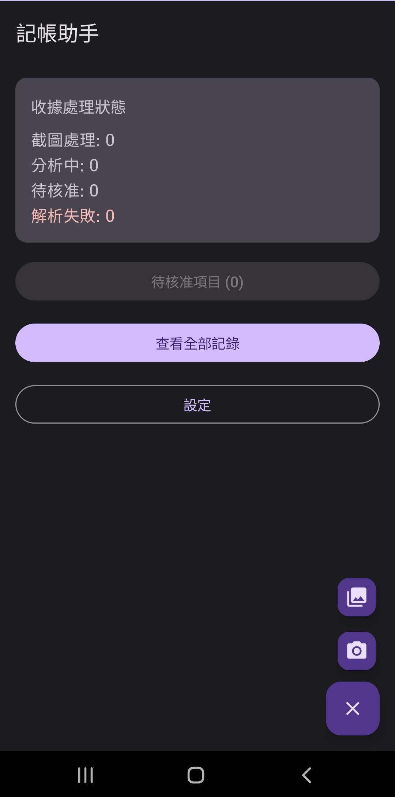
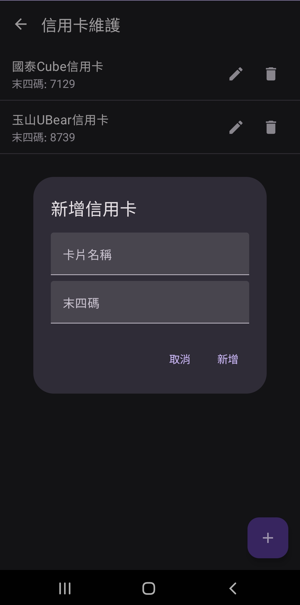
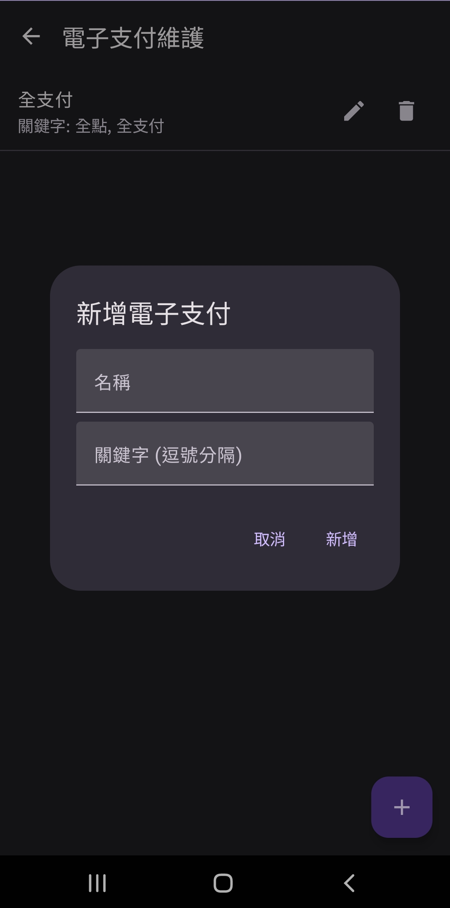
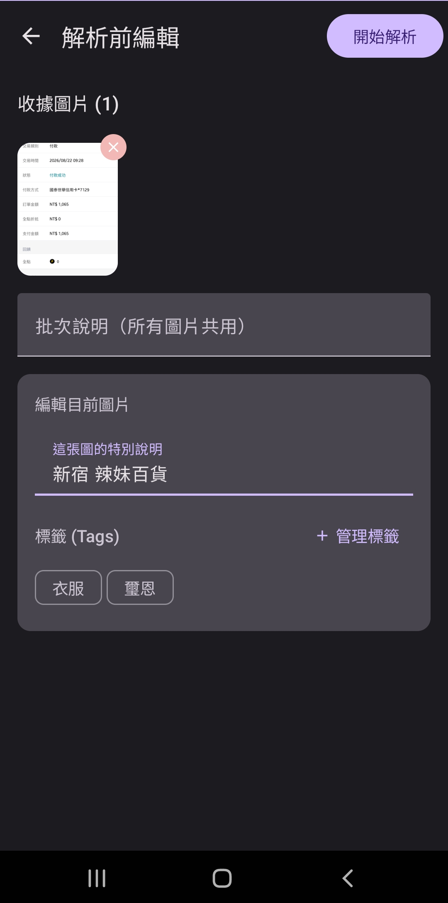
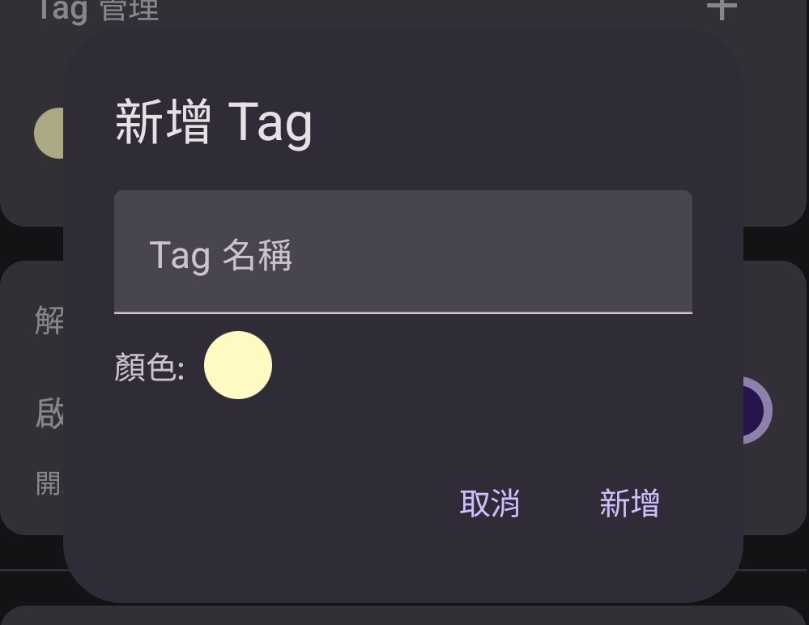
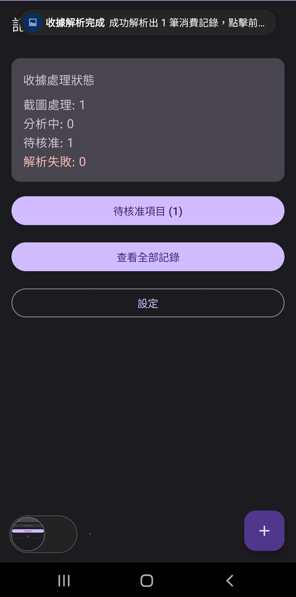
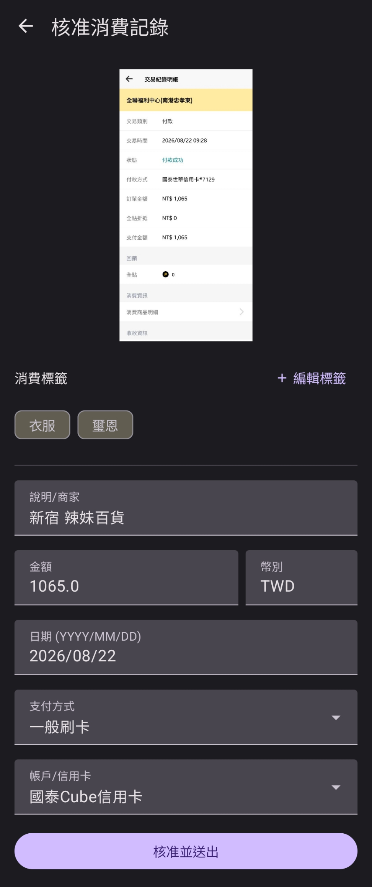
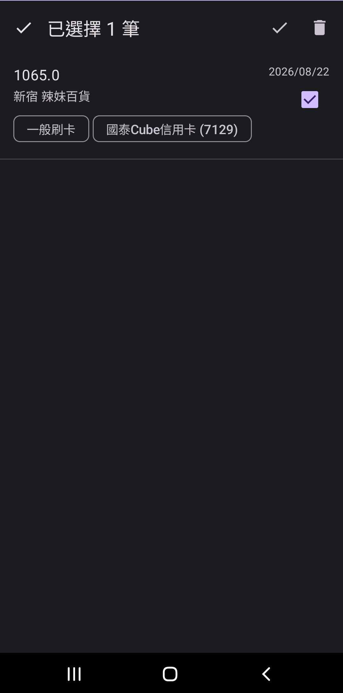
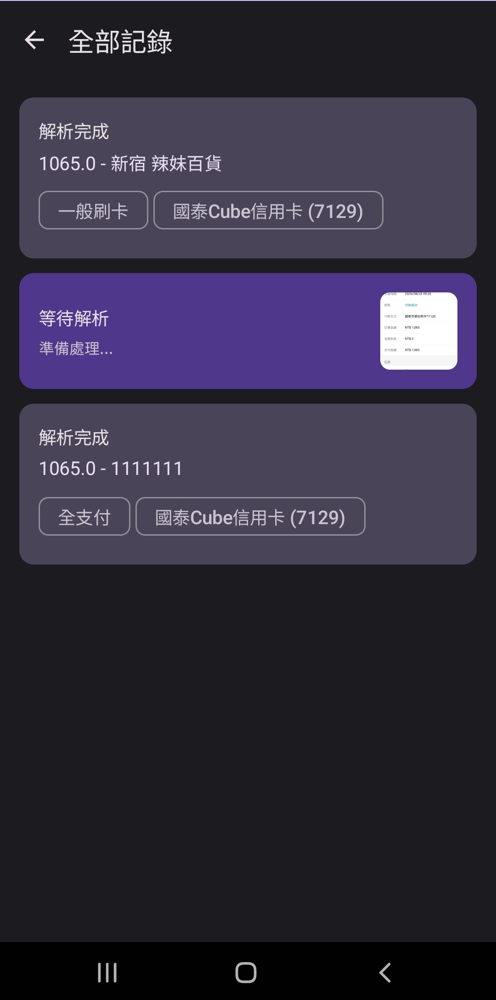
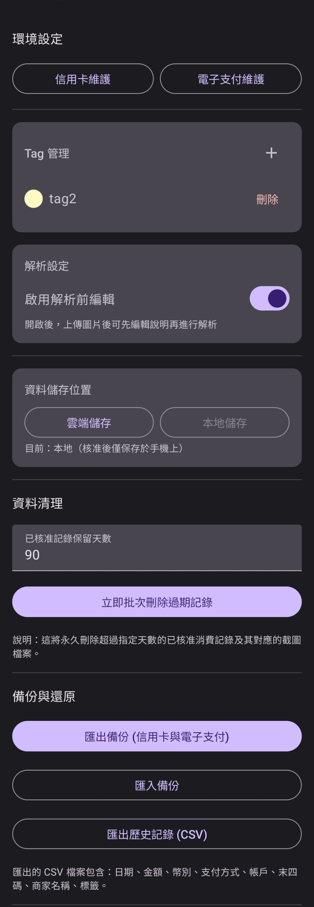

📋 目錄
1. 歡迎使用
歡迎使用「記帳助手」！這是一款專為快速記錄消費而設計的 Android 應用程式，結合了 AI 智慧解析能力，讓您透過拍照或上傳收據圖片，自動識別消費資訊，輕鬆管理每一筆支出。
💡 核心功能
- 📸 AI 智慧解析收據圖片
- 💳 自動識別信用卡/電子支付
- 🏷️ 支援標籤分類管理
- 📊 支援 CSV 匯出備份
- 🔄 支援多筆圖片同時處理
2. 基本操作流程
主畫面說明
主畫面會顯示當前的處理進度，讓您一目了然：
- 截圖處理：已選取但尚未壓縮的圖片數量
- 分析中：正在送給 AI 解析的圖片數量
- 待核准：已解析完成，等待您確認的消費記錄數量
- 解析失敗：解析失敗的項目數量（可點擊進入查看）

多筆輸入功能
您可以一次選取多張收據圖片，系統會自動建立排隊序列進行解析：
- 每張圖片會獨立進行 AI 解析，不會互相影響
- 主畫面會即時顯示各階段的處理進度
- 解析完成後會發送通知提醒您
3. 輸入收據的三種方式
方式一：從其他應用程式分享
- 在檔案管理器、LINE、Email 或其他 App 中找到收據圖片
- 點擊「分享」按鈕
- 選擇「記帳助手」
- 圖片會自動進入解析流程
方式二：從相簿選取（支援多選）
- 點擊主畫面的「＋」浮動按鈕
- 選擇「從相簿選擇」
- 可以一次選取多張圖片
- 確認後進入解析流程
方式三：直接拍照
- 點擊主畫面的「＋」浮動按鈕
- 選擇「拍照」
- 拍攝完成後會立即進入解析流程
💡 使用建議
為了獲得最佳的解析效果，請確保收據圖片清晰、完整，避免反光或摺疊遮擋文字。
4. 環境設定
在開始使用前，建議先設定您的支付方式，這樣 AI 才能準確判斷每筆消費使用的是什么卡片或電子支付。
設定路徑
設定 → 信用卡維護 / 電子支付維護
信用卡設定
- 卡片名稱：例如「國泰Cube信用卡」
- 末四碼：卡的後面4位數字（用於比對）

電子支付設定
- 名稱：例如「全支付」
- 關鍵字：收據上會出現的文字（逗號分隔），例如「全點,全支付」
- 用途：幫助 AI 識別使用該電子支付的交易

為什麼需要設定？
當您上傳收據時，AI 會根據以下規則判斷：
- 掃描收據上的關鍵字（如「全點」）→ 匹配電子支付
- 若找到匹配的電子支付，支付方式設為該電子支付名稱
- 同時比對信用卡末四碼，找出對應的信用卡
- 若都沒有匹配，預設為「一般刷卡」或「現金」
5. 解析前編輯功能
什麼是「解析前編輯」？
這是一個可選功能，讓您在發送圖片給 AI 之前，可以先查看圖片並補充說明。
如何啟用
設定 → 啟用解析前編輯 → 開啟開關

啟用後的流程
- 上傳圖片後，會進入編輯畫面
- 可以看到所有圖片的縮圖（清晰可辨識）
- 可以為每張圖片：
- 添加說明文字：如果 AI 辨識錯誤，可以手動修正商家名稱
- 選擇標籤：為這張收據標記分類標籤
- 確認無誤後點擊「開始解析」
未啟用的流程
上傳圖片後會直接進入背景解析，無需額外操作。
💡 使用時機
當您發現 AI 經常誤判某些商家的名稱時，可以開啟此功能，在解析前手動輸入正確的商家名稱。
6. 標籤 (Tag) 功能
標籤是用來分類消費記錄的工具，方便後續查詢和篩選。
建立標籤
設定 → Tag 管理 → 點擊「+」按鈕
- 輸入標籤名稱（例如：「餐飲」、「交通」、「公司報帳」）
- 選擇標籤顏色（預設為淡黃色）

使用標籤
解析前編輯時：
在編輯畫面中可以為每張圖片選擇多個標籤
核准時：
進入詳細資料頁面，點擊右上角「編輯標籤」，勾選或取消勾選標籤
標籤的運作方式
- 一筆消費可以關聯多個標籤
- 刪除標籤時，所有關聯的消費記錄也會自動移除該標籤
- 導出 CSV 時，多個標籤會用分號（
;）隔開
7. 核准與管理記錄
解析完成通知
當 AI 解析完成後，系統會：
- 彈出通知訊息告知您解析結果
- 主頁面的「待核准項目」按鈕會顯示待核准的數量

待核准畫面
- 點擊主畫面的「待核准項目」按鈕
- 可以看到所有已解析完成、等待確認的消費記錄
- 每筆記錄顯示：金額、商家、日期、支付方式、標籤
單筆核准
- 點擊該筆記錄進入詳細頁面
- 可以修改任何欄位（金額、日期、商家、支付方式等）
- 點擊「核准並送出」
- 核准後資料會保存在手機上

批次核准
如果您有多筆記錄需要核准，可以：
- 進入「待核准項目」頁面
- 點擊每筆記錄右上角的勾選框
- 點擊右上方的勾勾圖示, 所有選取的記錄會一次性核准並保存

查看全部記錄
- 點擊主畫面的「查看全部記錄」按鈕
- 可以看到所有歷史記錄（包含已核准和待處理）
- 每張卡片顯示：
- 狀態標籤（等待解析、解析中、解析完成、解析失敗）
- 解析完成的記錄會顯示金額和商家
- 解析中的記錄會顯示收據縮圖

8. 失敗處理
當 AI 解析失敗時
- 主畫面會顯示「解析失敗: X」
- 點擊可進入失敗項目列表
- 選擇失敗的項目，可以看到：
- 原始收據圖片
- 錯誤訊息（例如：「伺服器錯誤」、「圖片檔案不存在」）
- 可以點擊「再次送出解析」重新嘗試
- 如果確定資料正確，也可以直接點擊「核准並送出」
⚠️ 重要提醒
解析失敗通常是由於網路問題或圖片品質不佳所致。請確認網路連線正常後再嘗試重新解析。
9. 資料備份與匯出
儲存模式設定
設定 → 資料儲存位置 → 本地儲存
⚠️ 注意
請選擇「本地儲存」模式，這樣所有資料都會保存在您的手機上。雲端儲存模式是開發者專用，一般使用者不需要使用。
匯出備份（信用卡與電子支付）
- 點擊「匯出備份」按鈕
- 選擇儲存位置和檔案名稱
- 會產生 JSON 格式的備份檔案
- 包含：信用卡清單、電子支付清單
匯入備份
- 點擊「匯入備份」按鈕
- 選擇之前匯出的 JSON 檔案
- 系統會自動合併信用卡和電子支付資料
匯出歷史記錄（CSV）
- 在「本地儲存」模式下，點擊「匯出歷史記錄 (CSV)」
- 選擇儲存位置和檔案名稱
- 會產生 CSV 檔案，包含以下欄位：
- 日期、金額、幣別、支付方式、帳戶、末四碼
- 商家名稱、標籤、時間戳記
- 可以用 Excel 或 Google Sheets 開啟進一步分析

10. 使用小技巧
💡 五大使用技巧
- 提前設定支付方式：在第一次使用前，先設定好您的信用卡和電子支付，讓 AI 能更準確判斷
- 善用標籤分類：為消費記錄加上標籤，日後查詢會更方便（例如：「公司報帳」、「個人支出」）
- 使用解析前編輯：如果發現 AI 經常誤判某些商家的名稱，可以在解析前手動輸入正確的商家名稱
- 檢查通知：解析完成後系統會發送通知，點擊通知可以快速進入核准頁面
- 定期匯出備份：建議定期匯出 CSV 備份，避免資料遺失
11. 常見問題
Q: AI 解析需要等多久？
A: 通常 10-30 秒即可完成，取決於圖片大小和網路速度。
Q: 可以一次傳多少張圖片？
A: 沒有明確限制，但建議一次不要超過 20 張，以免過久等待。
Q: 解析失敗怎麼辦？
A: 可以點擊「再次送出解析」重新嘗試，或手動輸入資料後核准。
Q: 如何刪除不需要的記錄？
A: 目前支援透過「資料清理」功能批次刪除過期的核准記錄，或在設定中管理。
Q: CSV 匯出的標籤欄位是什麼格式？
A: 同一筆消費若有多個標籤，會用分號（;）隔開，例如：「餐飲;午餐;公司報帳」
📞 需要協助？
如有任何問題或建議，請隨時與開發者聯繫。
記帳助手 v1.0 | 最後更新：2026年8月